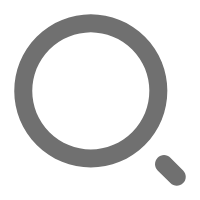
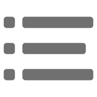
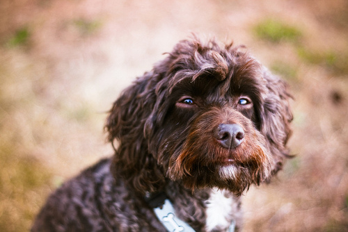

<ion-content>
  <div class="amap-zoomcontrol">

    <!-- <div #zoom_in class="button button-balanced amap-zoom-touch-plus" (click)="onClick1()">
      <div>+</div>
    </div>
    <div #zoom_out class="button button-balanced amap-zoom-touch-minus" (click)="onClick2()">
      <div>−</div>
    </div> -->
  </div>
  

  <!-- user button -->
  <button ion-fab color="vibrant" class="iconType" (click)="login()">
    
  </button>
  <ion-searchbar class="searchbar" (ionInput)="getItems($event)"></ion-searchbar>
  <button ion-fab color="vibrant" class="search" (click)="showsearchbar()" (tap)="toggleFooter();pointup();">
    
  </button>
  <button ion-fab color="vibrant" class="compass" (click)="login()">
    
  </button>
  <button ion-fab color="light" class="function_list">
    
  </button>
  <button ion-fab color="light" class="function_list2"><ion-icon name="add"></ion-icon></button>

  <!-- map -->
  <div #map_container class="map_container">
  
  </div>

</ion-content>
<ion-pullup #pullup (onExpand)="pointup()" (onCollapse)="footerCollapsed()" [(state)]="footerState">
  <ion-pullup-tab>
    <ion-icon name="arrow-up" *ngIf="footerState == 0" id="up"></ion-icon>
    <ion-icon name="arrow-down" *ngIf="footerState == 1"></ion-icon>
  </ion-pullup-tab>

  <ion-content>
      <ion-card>

          
          <ion-fab right top>
            <button ion-fab>
              <ion-icon name="pin"></ion-icon>
            </button>
          </ion-fab>
        
          <ion-item>
            <ion-icon name="football" item-start large></ion-icon>
            <h2>Museum of Football</h2>
            <p>11 N. Way St, Madison, WI 53703</p>
          </ion-item>
        
          <ion-item>
            <ion-icon name="wine" item-start large ></ion-icon>
            <h2>Institute of Fine Cocktails</h2>
            <p>14 S. Hop Avenue, Madison, WI 53703</p>
          </ion-item>
        
          <ion-item>
            <span item-start>18 min</span>
            <span item-start>(2.6 mi)</span>
            <button ion-button icon-start clear item-end>
              <ion-icon name="navigate"></ion-icon>
              Start
            </button>
          </ion-item>
        
      </ion-card>
  </ion-content>
</ion-pullup>
<!-- <ion-pullup #pullup2 (onExpand)="searchup()" (onCollapse)="footerCollapsed()" [(state)]="footerState">
    <ion-pullup-tab>
      <ion-icon name="arrow-up" *ngIf="footerState == 0" id="up2"></ion-icon>
      <ion-icon name="arrow-down" *ngIf="footerState == 1"></ion-icon>
    </ion-pullup-tab>
  
    <ion-content>
        
    </ion-content>
  </ion-pullup> -->
